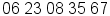
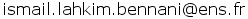

Ismail Lahkim Bennani
Computer Science studentfrench, english, arabic
- 
- ismailbennani
- 
| 04 to 08 2018 |
Test generation for synchronous and hybrid systems
Team Parkas, École Normale Supérieure |
Research internship |
| 03 to 07 2017 |
Recognition of human activities from a mix reality system
Institute for Cognitive Science, Technische Universität München |
Research internship |
| 06 to 07 2016 |
Knowledge Representation for Rule-Based Modelling
Team PLUME, Laboratoire de l'Informatique et du Parallélisme École Normale Supérieure de Lyon |
Research internship |
| 2018 | Master of Computer Science (MPRI) | École Normale Supérieure, Paris |
| 2016 |
Bachelor of Computer Science
with honors |
École Normale Supérieure, Paris |
| 2015 | Classes Préparatoires aux Grandes Écoles | Lycée Pierre de Fermat, Toulouse |
| 2013 |
French Baccalauréat S.
with high honors, specializing in mathematics |
Lycée Paul Valéry, Meknes, Morocco |